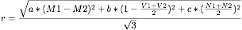
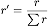

Compass Oracle
Parameters
- a, multiplier for median similarity {0, 1}
- b, multiplier for variance similarity {0, 1}
- c, mulitplier for node size similarity {0, 1}
- s, the number of sibling pairs to sample {1, 2, 4, 8}
- m, the number of nodes to either synthetically generate or classify {1, 2, 4, 8}
Ranking Function


Algorithm
Oracle (n):
- Separate n into halves.
- Use the first half to make an oracle tree, O.
- Separate the second half into eras of size 10.
- Use the first 0-2 eras as a base compass tree, C.
- For eras 2-end, insert each instance one at a time.
- After inserting the entire era of size 10, choose the most interesting instances or synthetically generate some.
- Remove the sampled instances from C, classify them using O, and reinsert them into C using their class information.
- Update the tree so to avoid clumping in the leaves.
- Return C.
Avoiding Clumping in the Incremental Tree
Ideas include:
- Pruning before inserting each era, and then just recursively apply compass to nodes with min-size > 4 |
- Pruning or applying compass to the highest 10% of leaves according to their variance score.